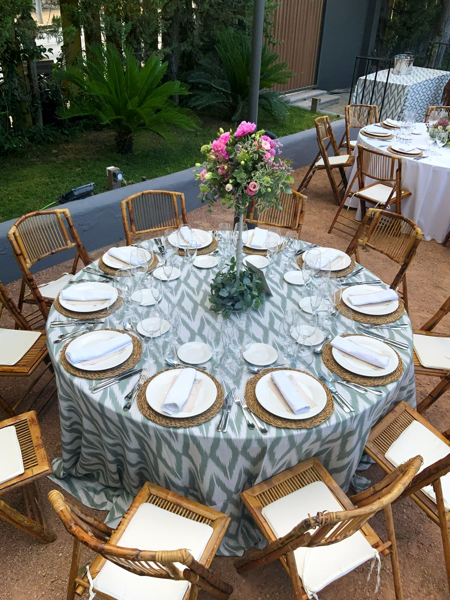
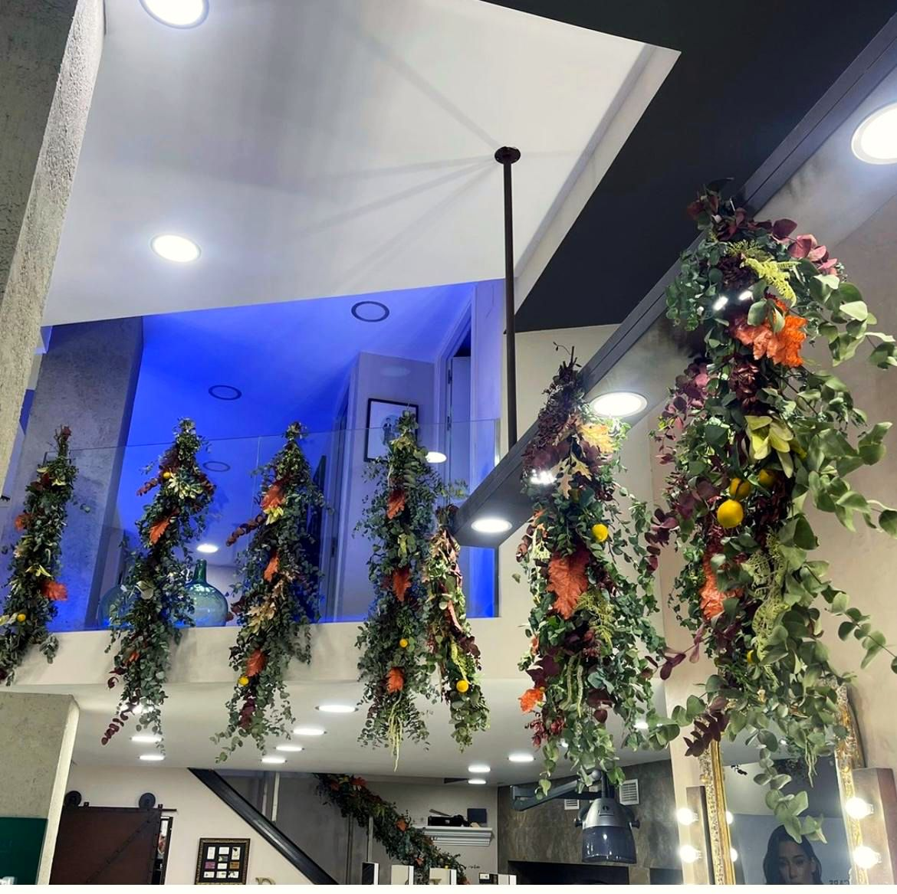
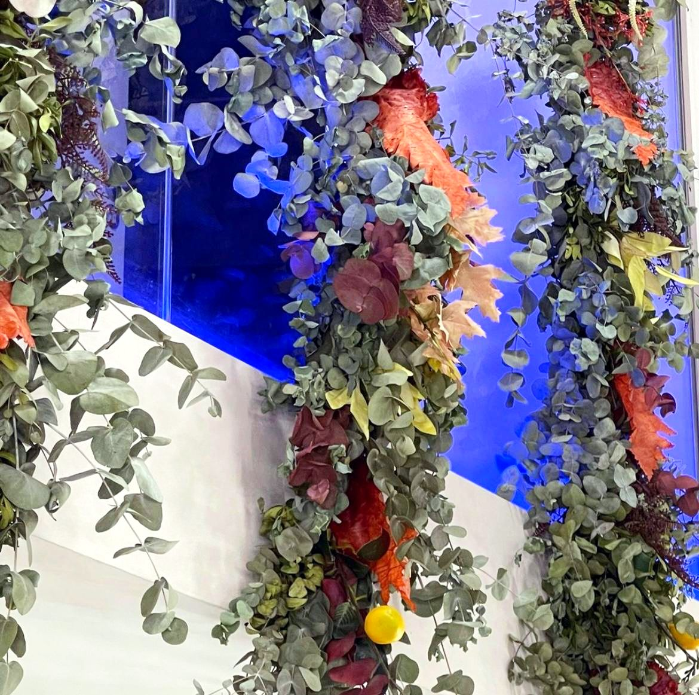
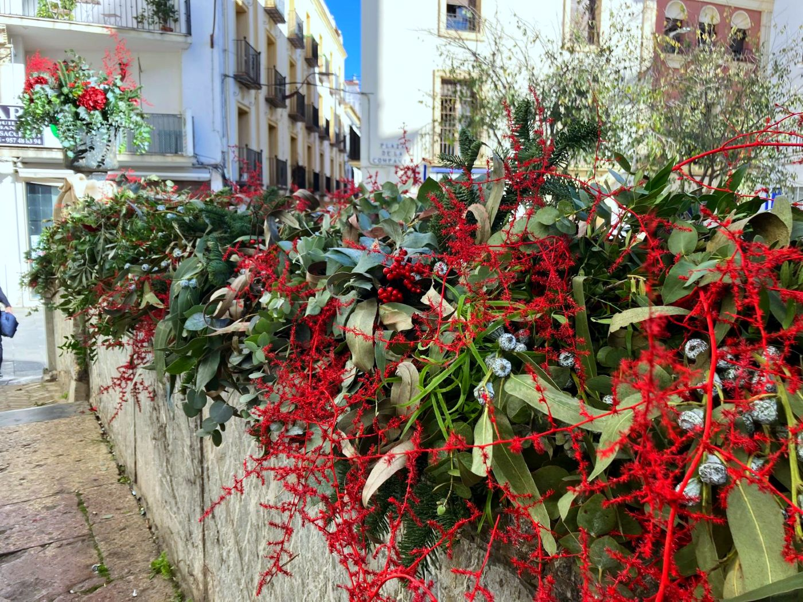
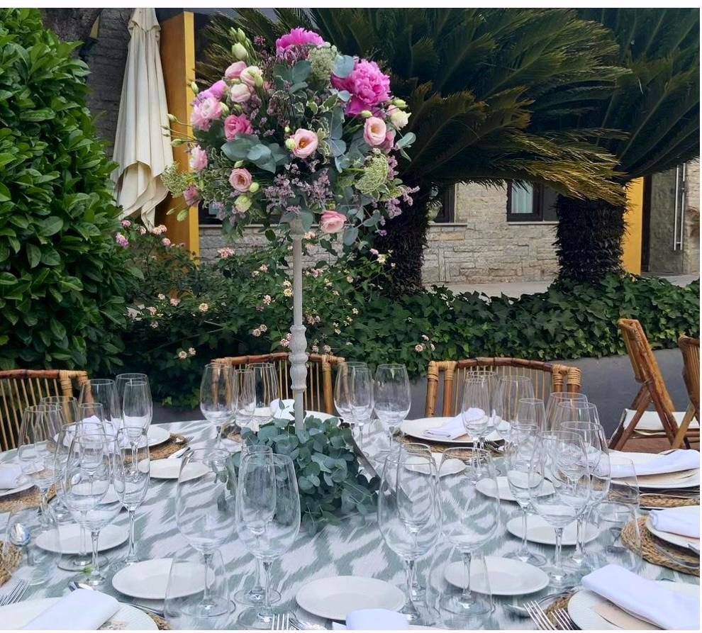
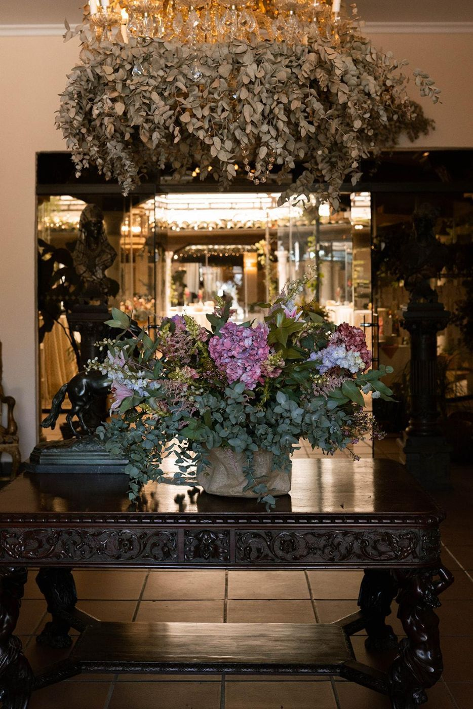
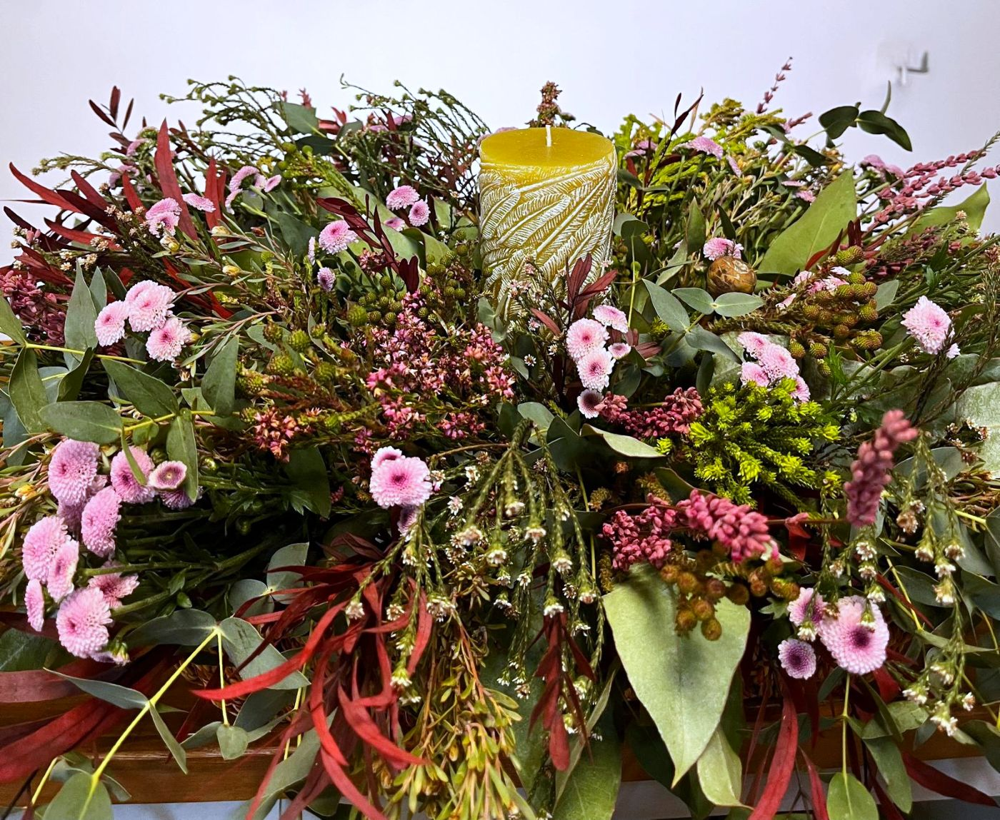
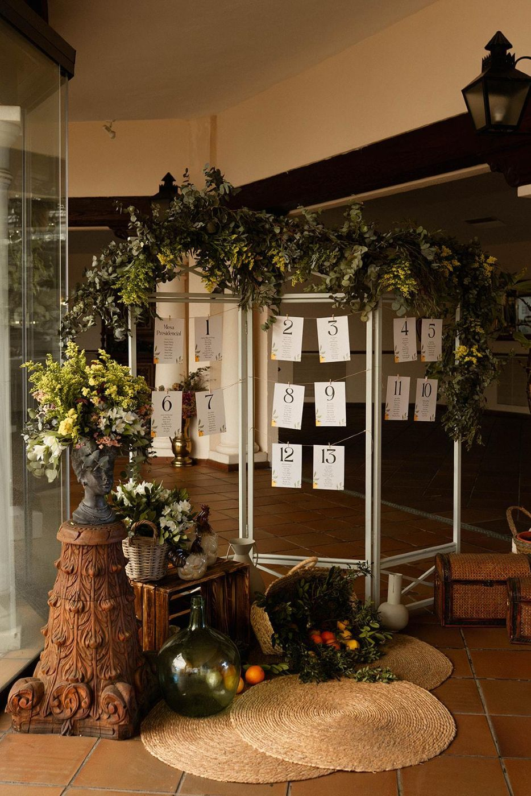
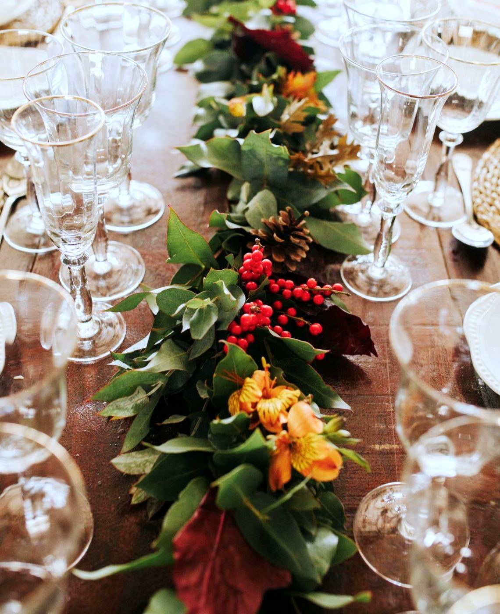

Empresas y congresos
Centros para mesas presidenciales, recepciones, atriles y escenarios. Flores para hoteles, oficinas y entregas de premios.
Pedir presupuestoPreparamos la decoración floral de congresos, empresas, ferias y celebraciones.
Nos ponemos a su disposición para organizar el evento que necesite: visitamos el espacio, proponemos las flores y lo montamos el día señalado. Instituciones como el Cabildo Catedral, la Universidad de Córdoba o la Universidad Loyola ya confían en nosotros.
Centros para mesas presidenciales, recepciones, atriles y escenarios. Flores para hoteles, oficinas y entregas de premios.
Pedir presupuesto
Flores de pascua, centros de mesa para las cenas navideñas y decoración para casas, comercios y oficinas.
Encargar para Navidad
Casetas de feria, comuniones, bautizos, aniversarios y fiestas privadas. Adaptamos la decoración al espacio y al presupuesto.
Contarnos tu eventoPulsa en una foto para verla en grande.










Cuéntanos la fecha, el lugar y el número de invitados y te preparamos un presupuesto.